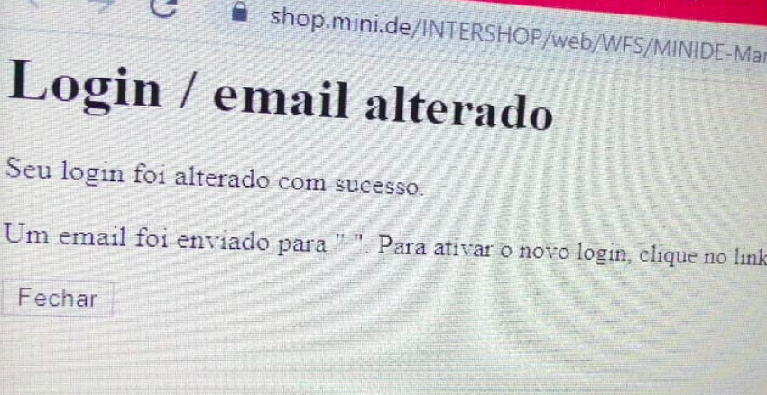

Bug Bounty - Session Takeover in BMW Shops via XSS - HackerOne
28-02-2021
Credits: hackerone.com/bmwgroup
Introduction
Back in April 2020 I found a bug in BMW online shop (actually, the bug
affected all of their shops) and reported through HackerOne bug bounty program.
The report was almost instantly closed as informative since
Since then, the security issue was fixed, but I haven't got any reply confirming the fix from HackerOne staff or BMW itself whatsoever nor a request to re-test the exploit.
Also worth to mention that I wasn't even added to their "Hall of Fame" published at https://www.bmwgroup.com/en/general/Security.html.
Vulnerability
Most of BMW shops run on
Moral of the story: BMW developers included custom modules/components into the core web application, thus violating the integrity of Intershop instance and leading to security issues due to lack of testing.
The issue affected, at least, the following shop instances:
- shop.bmw.de
- shop.mini.de
- shop.bmw-motorrad.de
- shop.bmw-classic.de
The vulnerability was a cross-site scripting through a custom display message in the
When injected, the text at that particular parameter would be displayed while rendering the webpage,
allowing, for example, HTML
Since the XSS would be triggered in the context of a logged-in user, I decided to explore a little bit further.
At the beginning I tried to perform requests on behalf of victim's user to force the change of current email address, as that would certainly lead to a full account takeover, by modifying the current victim's email to another address controlled by an attacker. However it was not possible due to requirement of current password.

Also, to perform other actions, the HTTP requests included a
So I began to develop a simple PoC in JavaScript. In resume it would have 2 stages:
- 1 - Grab
synchronizer token from the victim's session context - 2 - Use that token to hijack their session and send arbitrary HTTP requests to perform actions within the shop
The exploit leveraged
token = http.responseText.split("SYNCHRONIZER_TOKEN_VALUE = '")[1].split("'")[0];At this moment, we have control over the victim's session and are able to read/edit their personal information, view the purchase history, payment methods, etc.
If BMW shops saved the payment information for quicker purchases in the future, it would be really easy to modify the shipping address and place arbitrary orders, in an automated fashion.
In other words, that would allow a malicious hacker to buy BMW products and ship them to his desired address on behalf of victim's account.
The web server also lack important security headers & policies (thus enabling this type of attacks), and the accounts are, in some way, synchronized with MyBMW service, but thats out-of-scope for this post.
Demo Video (Proof-of-Concept)
Conclusion
At this moment I confirm the vulnerability is fixed, however, still no answer from the developers or HackerOne staff. Kind of disappointed with the way my report was managed at the bug bounty platform.
In my perspective, this security issue could have lead to the exposure of sensitive user's information aswell as partial takeover of their accounts, due to the easiness of exploitation.
Maybe my report wasn't clear enough. There was lack of communication when explaining the security impact this vulnerability could have. The feedback would be important to understand what could be improved.
Either way, I'm happy that the issue is already fixed and to have contributed to BMW security :)
Timeline
- 2020-04: Issue reported to bug bounty program (hackerone.com/bmwgroup)
- 2020-04: Issue reported to web application vendor (intershop.de)
- 2020-05: HackerOne report closed by staff
- 2020-07: Intershop confirmed the issue didn't affect the core product (only BMW instances)
- ????-??: Vulnerability was fixed
- 2021-02: Public disclosure (as Last Resort according to h1 Disclosure Guidelines)
References
- https://labs.f-secure.com/blog/getting-real-with-xss/
- https://blog.0daylabs.com/2014/11/01/xss-ex-filtrating-data-xmlhttprequest-js-pentesters
- https://owasp.org/www-community/attacks/csrf